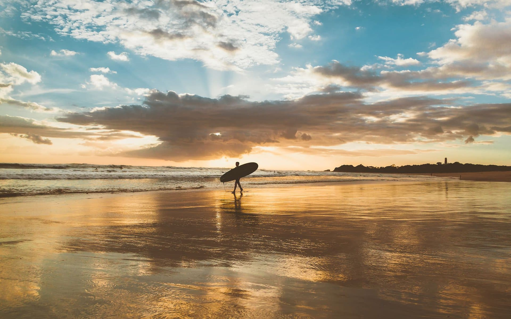

Equilibrio
Libertad
Conexion

Países en la Historia del Surf


Historia del Surf
El Capitán James Cook documenta por primera vez el surf en Hawái.
El surf llega a California gracias a George Freeth, conocido como el "primer surfista moderno".
El surf se populariza globalmente con la invención de tablas más ligeras y maniobrables.
El surf se convierte en un fenómeno cultural con películas y música dedicadas al deporte.
El surf profesional crece con la creación de la World Surf League (WSL).
El surf se incluye como deporte olímpico en los Juegos de Tokio.